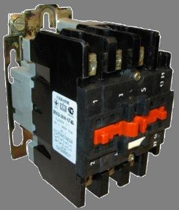

 Магнитные пускатели
Проилюстрируем несколько вариантов подключения оборудования управляемого магнитными пускателями. Предлагается несколько вариантов подключения: для пуска и остановки электродвтгателя (нереверсивное подключение), для переключения направления вращения асинхронного двигателя (реверсивное подключение) и для переключения направления вращения двух асинхронных двигателей что может встречаться в управлении тельфером (верх низ, лево право). Для маскимальной наглядности представлено два варианта схем: функциональная и наглядное изображение.
...